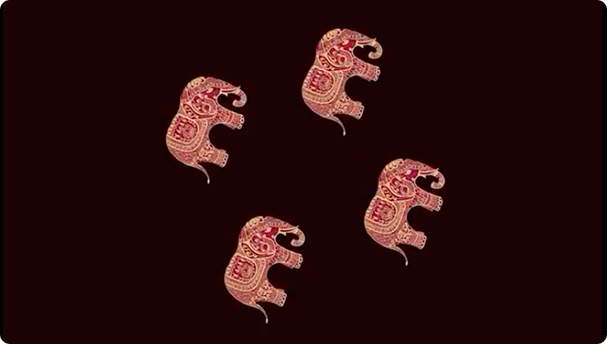
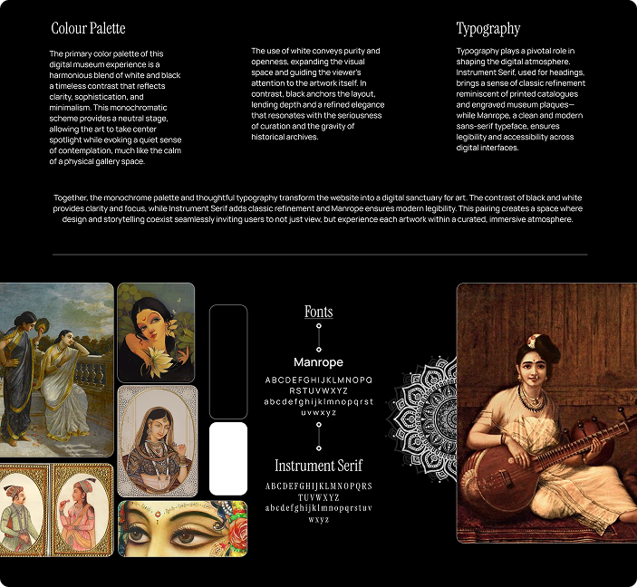
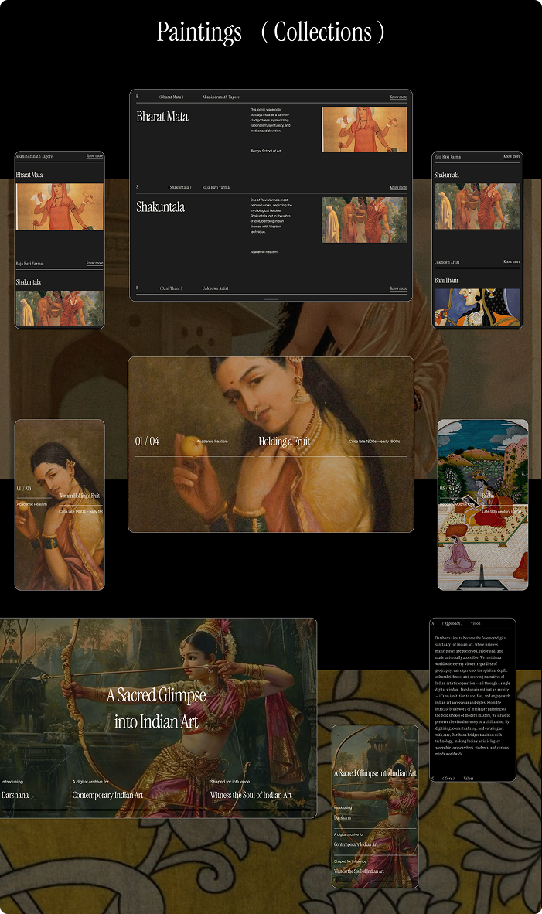
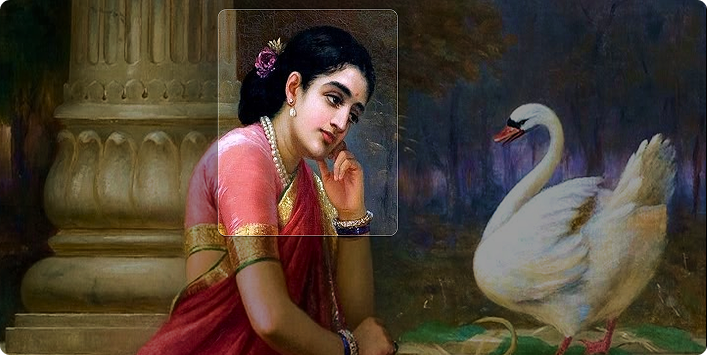

DIGITAL ARCHIVE × WEB DESIGN
Darshana
Turning coffee culture into an immersive digital experience.
TL;DR
Darshana is a digital art archive designed to make Indian art easier to discover, explore, and understand online.
The project focuses on transforming a large amount of cultural information into an engaging web experience through editorial layouts, visual hierarchy, intuitive navigation, and contextual storytelling.
I worked across the information architecture, UX, visual design, interaction design, and web experience.
Background
An archive shouldn't feel like a database.
Indian art carries layers of history, culture, artists, movements, mediums, and stories.
But presenting all of that information digitally can easily result in dense interfaces that prioritize categorization over discovery.
Darshana explores a different approach.
Problem
How do you make an archive feel alive?
A user shouldn't need to know the name of an artist or movement before they can start exploring.
The website needed to support both:
Intentional search — I know what I'm looking for.
Serendipitous discovery — I want to see what I find.
Process
Designing the experience
-
Designing for exploration
The homepage was designed as an entry point into discovery rather than simply a directory.
Visual content creates multiple paths into the archive.
-
Creating an editorial hierarchy
Artwork remains the primary visual element.
Typography and layout provide context without competing with the work itself.
The visual language combines Instrument Serif and Manrope to create a balance between editorial character and digital clarity.
-
Connecting artwork and context
An artwork becomes more meaningful when users can understand the context around it.
The experience connects:
Artwork → Artist → Movement → Period → Medium → Context
This allows users to move between individual pieces and the larger archive.
-
Making discovery feel effortless
Filters, categories, navigation, and content hierarchy are designed to support exploration without making the experience feel like a research database.

Final Product
Darshana
01 Discover
A visually-led homepage introduces users to the archive and encourages exploration.
02 Explore the archive
Users can browse artworks through categories, movements, periods, and other contextual relationships.
03 Artwork detail
The artwork takes center stage while supporting information gives users the context needed to understand it.
04 Artist experience
Artist pages connect individual works to the people and practices behind them.
05 Connected discovery
Instead of ending at one artwork, the experience creates pathways to related artists, movements, and works.

The Visual Language
Editorial, but not archival.
The combination of Instrument Serif + Manrope creates a contrast between cultural/editorial expression and contemporary digital usability.
Large imagery, generous whitespace, restrained UI elements, and strong typography keep the artwork at the center of the experience.
Reflections
Discovery needs multiple entry points.
One of the biggest design considerations was allowing users to enter the archive from different directions.
Someone might begin with an artist.
Someone else might begin with a movement.
Another person might simply discover an artwork visually.
A good archive should accommodate all three.
The interface should know when to disappear.
When the content is visually rich, the designer's job isn't always to add more.
Sometimes the strongest design decision is giving the content enough space to speak for itself.
